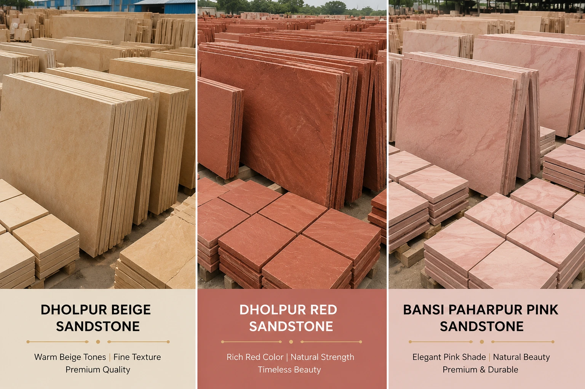
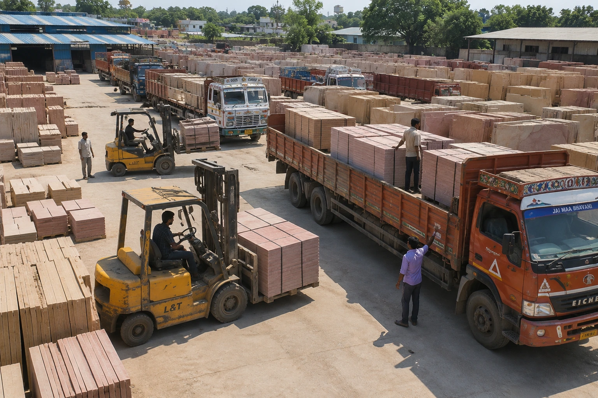
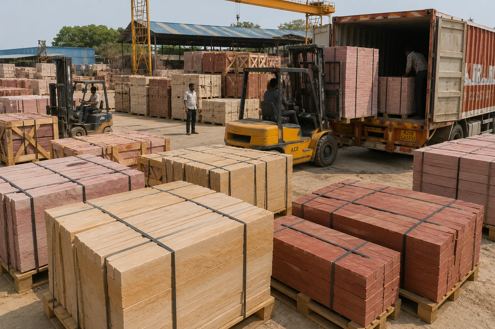

Sandstone Wholesaler India
ANAY Premium Stone is a trusted sandstone wholesaler in India supplying Dholpur Beige Sandstone, Dholpur Red Sandstone and Bansi Paharpur Pink Sandstone in bulk quantities. We support traders, distributors, dealers, exporters, wholesalers and construction companies seeking reliable sandstone supply and long-term sourcing partnerships.
Request a Quote
Why Choose a Sandstone Wholesaler in India?
India is one of the world's leading sources of premium natural sandstone. Working with a sandstone wholesaler in India provides access to a broad range of sandstone products, competitive supply capabilities and dependable availability for ongoing business requirements.
ANAY Premium Stone supplies sandstone products in wholesale quantities for traders, distributors, exporters and project developers. Our wholesale supply model helps customers maintain inventory, support project schedules and meet market demand efficiently.
We specialise in premium sandstone varieties including Dholpur Beige Sandstone, Dholpur Red Sandstone and Bansi Paharpur Pink Sandstone.
Learn more about ANAY Premium Stone and our wholesale sandstone supply capabilities.
- Bulk Sandstone Supply
- Wholesale Pricing Support
- Reliable Product Availability
- Export Grade Packaging
- Distribution and Dealer Support
- Long-Term Supply Partnerships
Wholesale Sandstone Products

ANAY Premium Stone supplies a diverse portfolio of sandstone products suitable for distributors, dealers, traders and project procurement companies. Our wholesale inventory includes premium sandstone products manufactured to meet domestic and international market requirements.
We supply sandstone in slabs, tiles, paving, wall cladding, pool coping, steps, risers, kerbstones and custom architectural formats. Bulk availability helps customers maintain stock levels and fulfil project requirements efficiently.
Wholesale Product Categories
- Dholpur Beige Sandstone
- Dholpur Red Sandstone
- Bansi Paharpur Pink Sandstone
- Sandstone Slabs
- Sandstone Tiles
- Sandstone Paving
- Wall Cladding Stone
- Pool Coping Stone
- Landscape Stone Products
- Custom Architectural Sandstone
Our wholesale sandstone products are widely supplied to dealers, wholesalers, distributors, exporters and construction companies across India and international markets.
Dholpur Beige Sandstone Wholesale

Dholpur Beige Sandstone is one of the most popular sandstone products supplied through wholesale channels in India. Its warm beige colour, consistent texture and architectural versatility make it a preferred choice for dealers, distributors, builders and project developers.
ANAY Premium Stone supplies Dholpur Beige Sandstone in wholesale quantities for inventory stocking, distribution networks and project-based procurement programs. The stone is available in slabs, tiles, paving stones, wall cladding and custom architectural formats.
Applications of Dholpur Beige Sandstone
- Luxury Villas
- Hotels and Resorts
- Pool Decks
- Courtyards
- Outdoor Living Areas
- Landscape Architecture
- Architectural Wall Cladding
- Premium Commercial Developments
Its timeless appearance and long-term durability continue to make Dholpur Beige Sandstone one of the most demanded natural stones in the wholesale market.
Dholpur Red Sandstone Wholesale

Dholpur Red Sandstone is renowned for its rich terracotta-red colour, natural strength and architectural character. It remains a preferred choice for monumental architecture, commercial projects, public infrastructure and landscape developments.
ANAY Premium Stone supplies Dholpur Red Sandstone in wholesale quantities for distributors, dealers, exporters and construction companies seeking dependable product availability and consistent quality.
Applications of Dholpur Red Sandstone
- Government Buildings
- Commercial Projects
- Institutional Architecture
- Public Infrastructure
- Architectural Facades
- Landscape Projects
- Monumental Entrances
- Luxury Estates
Its distinctive colour and architectural appeal continue to make Dholpur Red Sandstone one of the most respected natural building stones supplied in India.
Bansi Paharpur Pink Sandstone Wholesale

Bansi Paharpur Pink Sandstone is internationally recognised for its elegant pink colour and premium architectural appearance. Frequently specified for luxury hospitality projects, heritage-inspired developments and prestigious commercial buildings, it remains one of Rajasthan's most admired sandstone varieties.
ANAY Premium Stone supplies Bansi Paharpur Pink Sandstone in wholesale quantities for distributors, traders and project procurement companies requiring premium natural stone products.
Applications of Bansi Paharpur Pink Sandstone
- Luxury Hotels and Resorts
- Premium Residential Projects
- Religious and Cultural Architecture
- Commercial Developments
- Landscape Projects
- Architectural Features
- Heritage-Style Buildings
- Public Spaces
Its unique appearance and architectural elegance make it a valuable addition to any sandstone distribution portfolio.
Bulk Distribution Across India

ANAY Premium Stone supports bulk sandstone distribution across India through reliable supply systems designed for dealers, distributors, traders and wholesalers. Our distribution capabilities help customers maintain inventory, fulfil project requirements and support regional markets efficiently.
Whether the requirement involves commercial developments, infrastructure projects, landscaping works or wholesale inventory management, our sandstone products are available in bulk quantities with dependable supply support.
Distribution Support Services
- Bulk Sandstone Inventory Supply
- Dealer and Distributor Support
- Project-Based Procurement Programs
- Wholesale Stock Replenishment
- Custom Product Supply
- Bulk Slabs and Tile Supply
- Commercial Project Distribution
- Long-Term Supply Partnerships
Our objective is to help wholesalers and distributors access premium sandstone products while maintaining consistency, availability and reliable service.
We regularly work with sandstone dealers, stockists, distributors and procurement companies seeking a dependable sandstone wholesaler in India for long-term supply partnerships and bulk procurement programs.
Why Traders and Dealers Choose ANAY Premium Stone

Traders, dealers and distributors require a sandstone wholesaler capable of maintaining consistent product quality, dependable availability and long-term supply reliability. ANAY Premium Stone supports wholesale customers through professional supply systems designed to meet commercial and project-based requirements.
Our wholesale operations focus on helping distributors and dealers maintain inventory levels, support customer demand and deliver premium sandstone products to their respective markets.
Advantages of Working with ANAY Premium Stone
- Bulk Product Availability
- Reliable Supply Capability
- Consistent Product Quality
- Wholesale Supply Support
- Export Grade Packaging
- Custom Product Manufacturing
- Project-Based Supply Solutions
- Professional Customer Support
- Long-Term Business Relationships
- International Market Experience
Our objective is to provide dependable sandstone wholesale solutions that help customers grow their businesses while maintaining product quality and supply consistency.
Who We Serve
ANAY Premium Stone supplies sandstone products to a wide range of businesses and professionals operating within domestic and international markets.
- Sandstone Dealers seeking dependable wholesale inventory.
- Stone Traders requiring consistent product availability.
- Wholesalers and Distributors managing regional supply networks.
- Exporters sourcing premium sandstone products.
- Builders and Contractors requiring sandstone for construction projects.
- Architects and Designers specifying premium natural stone materials.
- Landscape Contractors sourcing paving and outdoor stone products.
- Procurement Companies managing large-scale project requirements.
- International Importers seeking reliable sandstone sourcing partners.
Frequently Asked Questions
Who is a sandstone wholesaler in India?
ANAY Premium Stone is a sandstone wholesaler in India supplying premium sandstone products in bulk quantities for dealers, traders, distributors, exporters and project developers.
Which sandstone products do you supply wholesale?
We supply Dholpur Beige Sandstone, Dholpur Red Sandstone, Bansi Paharpur Pink Sandstone, slabs, tiles, paving, wall cladding and custom architectural sandstone products.
Do you supply sandstone in bulk quantities?
Yes. We specialise in wholesale sandstone supply for distributors, dealers, exporters and large construction projects.
Can distributors source directly from you?
Yes. Distributors and dealers can source sandstone products directly from ANAY Premium Stone.
Do you provide export-grade packaging?
Yes. All products are packed using professional export-grade packaging suitable for domestic and international transportation.
Do you supply sandstone across India?
Yes. We support sandstone distribution and wholesale supply requirements throughout India.
Do you support long-term supply partnerships?
Yes. We regularly work with dealers, distributors, traders and exporters seeking long-term sourcing relationships.
Can you supply sandstone for commercial projects?
Yes. We support commercial developments, hospitality projects, infrastructure works and large-scale procurement programs.
Do you offer custom sizes and finishes?
Yes. We can supply sandstone products according to project specifications and custom requirements.
How can I request a quotation?
You can contact ANAY Premium Stone with your project requirements, quantities and specifications to receive a quotation.
Explore Our Sandstone Collections and Supply Solutions
Request a Quote for Wholesale Sandstone Supply
Looking for a reliable sandstone wholesaler in India? Contact ANAY Premium Stone for wholesale pricing, technical specifications, samples, bulk supply requirements and long-term sourcing support.
✓ Bulk Supply Available
✓ Export Grade Packaging
✓ Custom Sizes & Finishes
✓ Dealer & Distributor Support
Request a Quote